WIKI KIMETSU NO YAIBA
Kimetsu no Yaiba (鬼滅の刃 lit. «espada matademonios»), también conocida bajo su nombre en inglés "Demon Slayer", o en español "Guardianes de la Noche", es una serie de manga escrita e ilustrada por Koyoharu Gotōge, cuya publicación comenzó el 15 de febrero de 2016 en la revista semanal Shūkan Shōnen Jump de la editorial Shūeisha. Una adaptación a serie de anime producida por el estudio Ufotable fue estrenada el 6 de abril de 2019 y finalizó el 28 de septiembre de ese mismo año cuya primera temporada tiene 26 episodios. La continuación de la historia fue adaptada en formato de película y se llamó Kimetsu no Yaiba: Mugen Ressha-hen, se estrenó el 16 de octubre de 2020 en Japón, convirtiéndose en la película más taquillera en la historia de dicho país. Una segunda temporada del anime y continuación de la película comenzó su emisión en el mes de noviembre de 2021. Una tercera temporada fue estrenada anticipadamente en cines japoneses en febrero de 2023, y se exhibió también en salas de cine selectas a nivel mundial, a lo largo del mes de marzo del mismo año, como parte de una película recopilatoria del anime, que consta de secuencias de los dos últimos episodios de la segunda temporada y el primer episodio de la tercera temporada. El estreno oficial de la tercera temporada, dentro de la serie televisiva, se produjo el 9 de abril de 2023. Para febrero de 2021, el manga cuenta con 23 volúmenes publicados y con 150 millones de copias en circulación, incluidas copias digitales, convirtiéndose así en una de las series de manga más vendidas de la historia.
 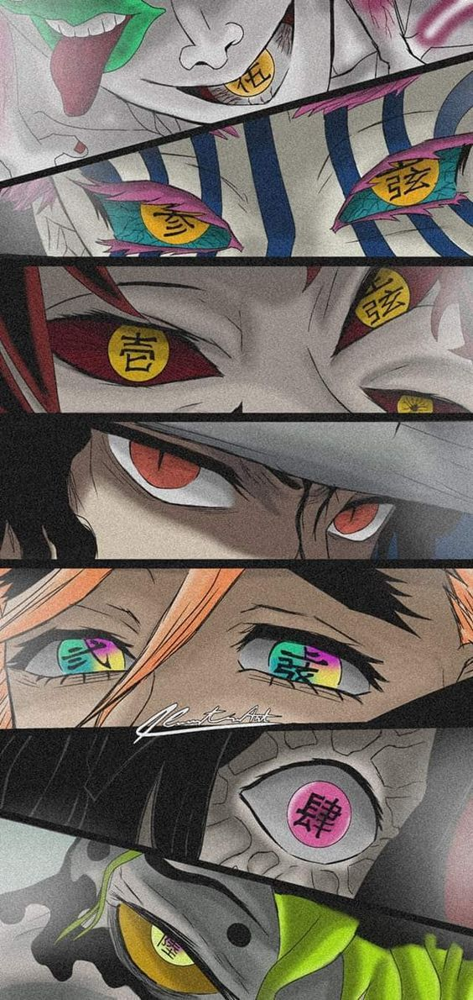
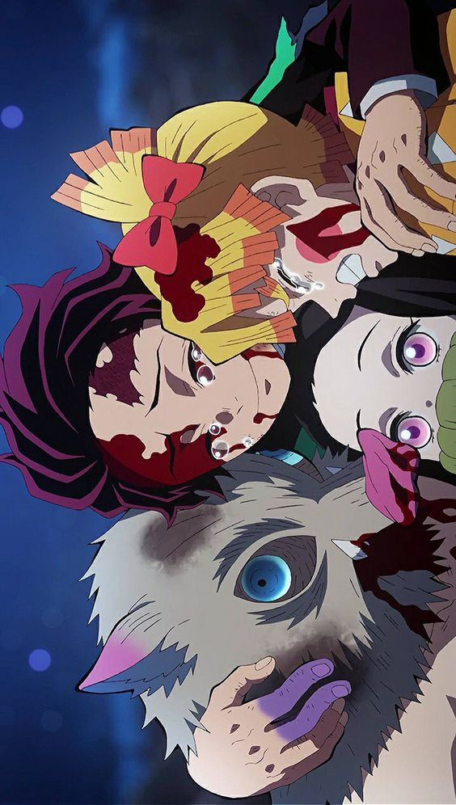
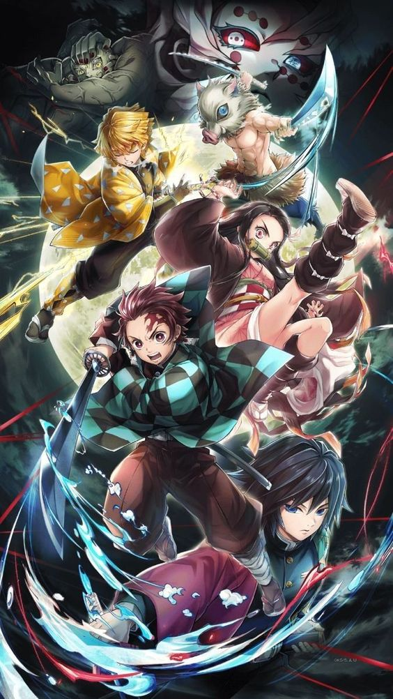
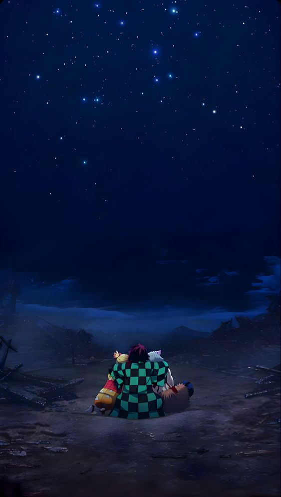
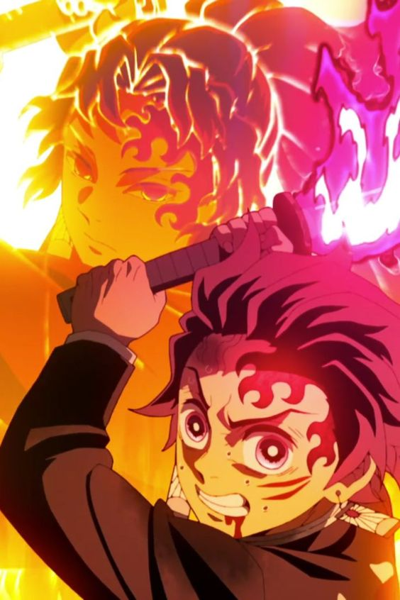
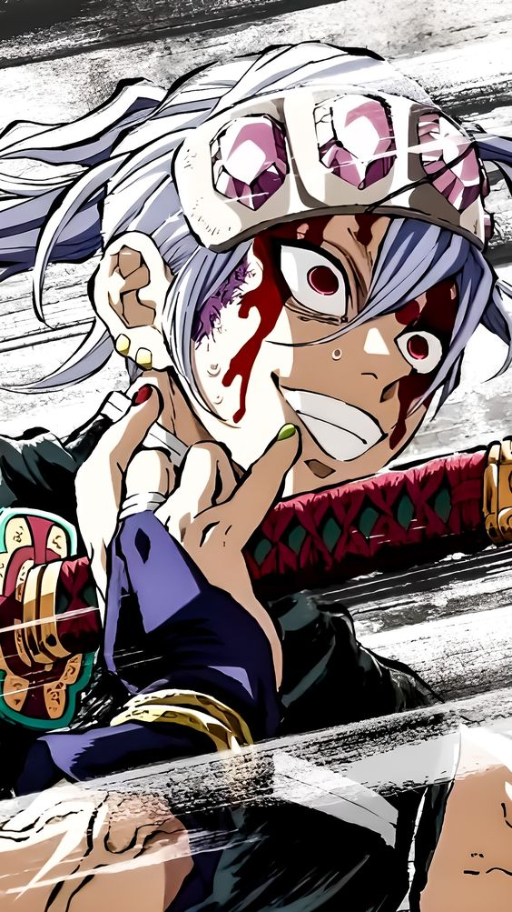
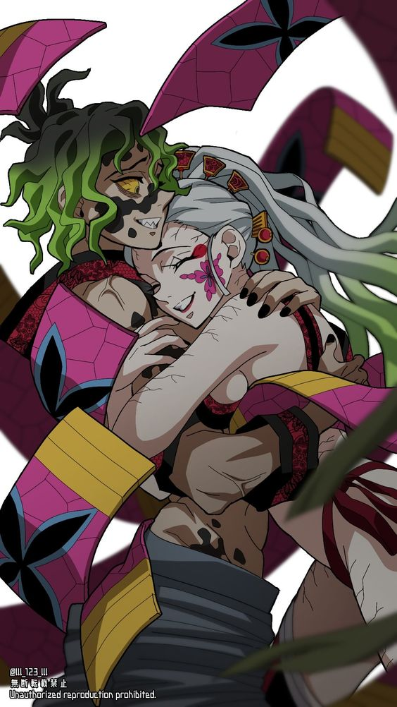
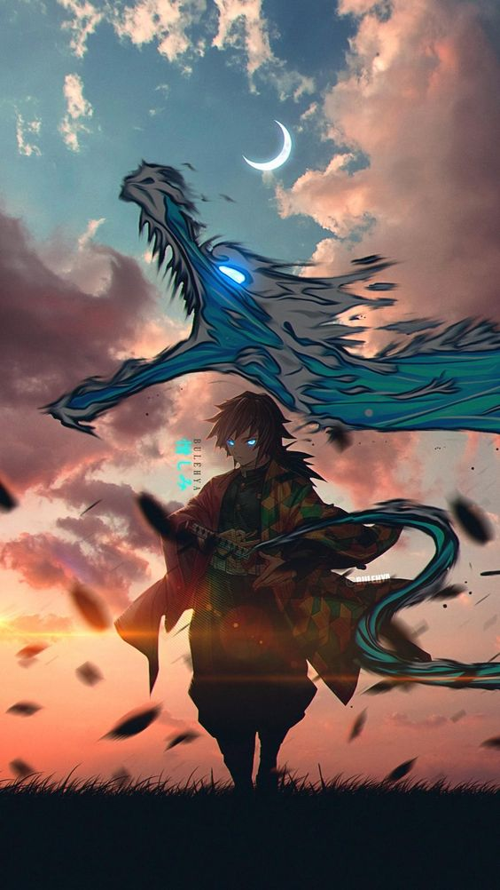
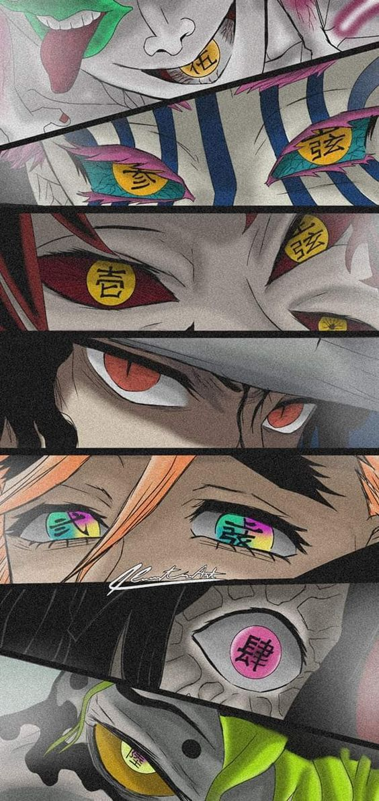
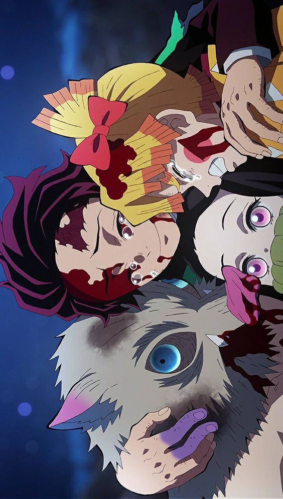
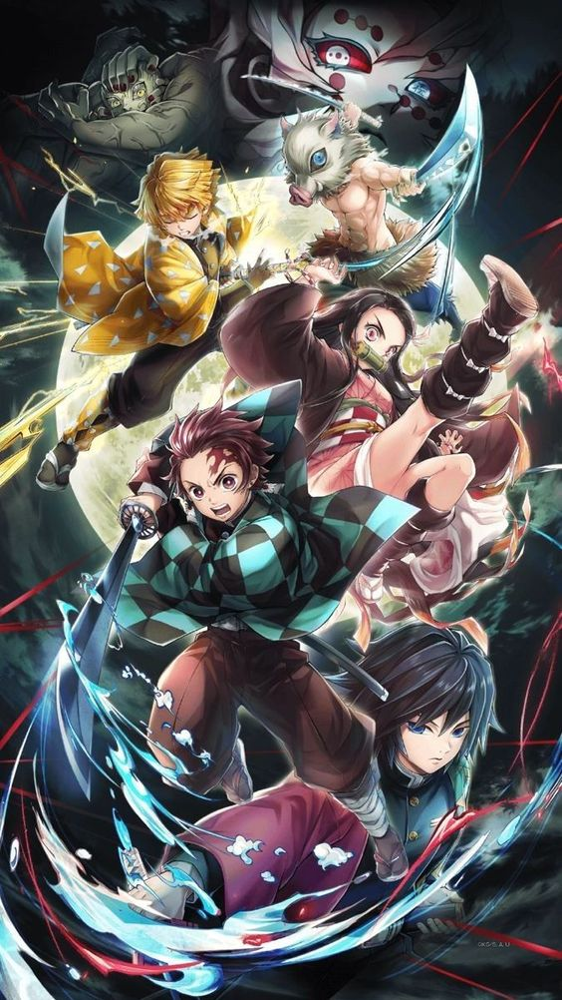
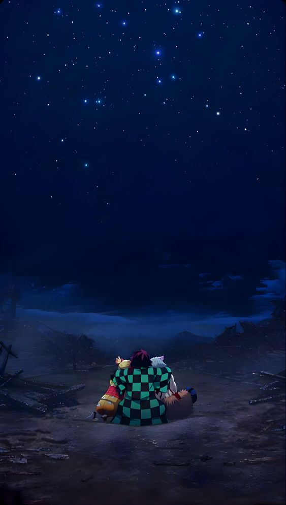
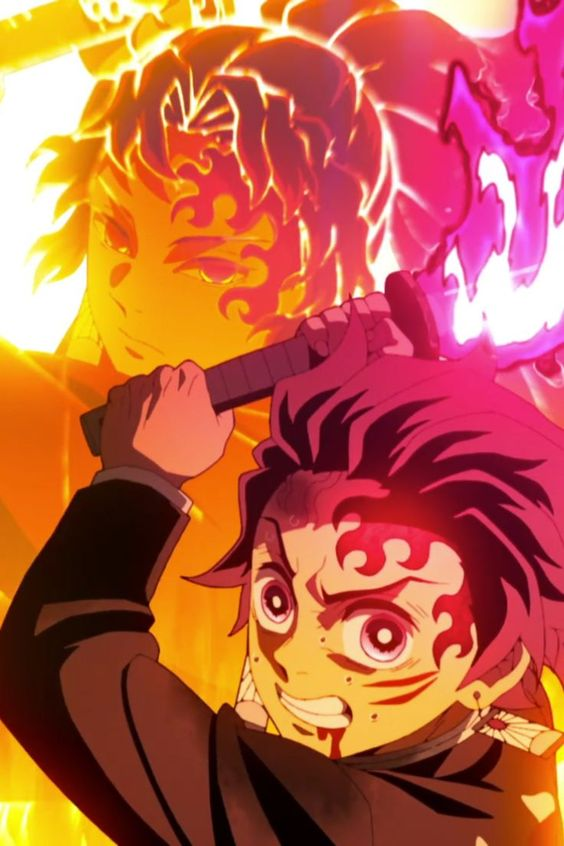
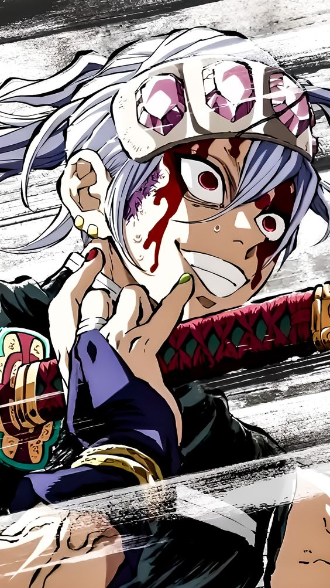
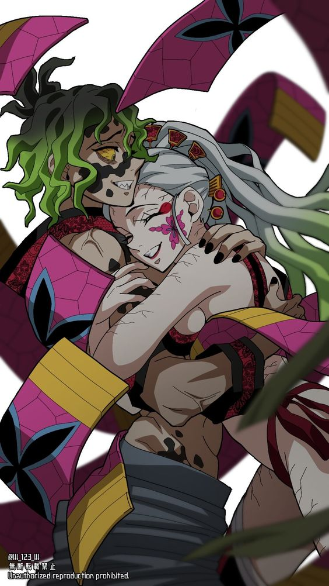
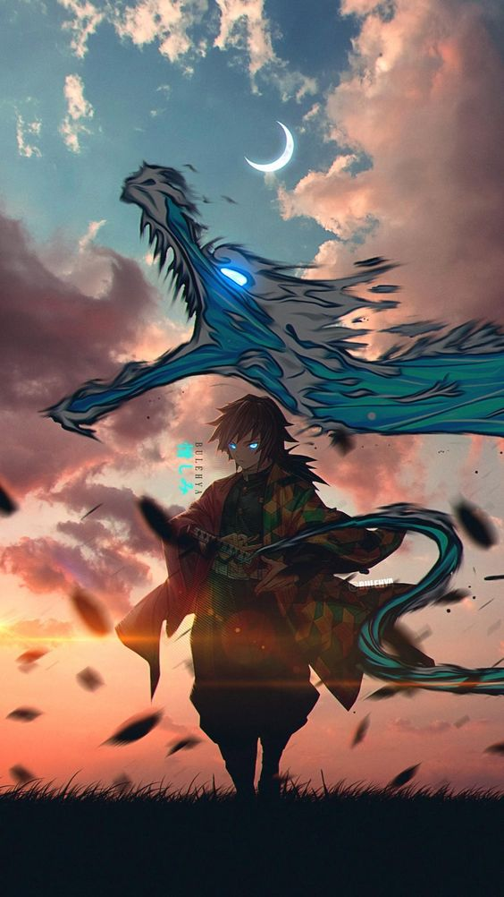
Ambientada en la era Taisho, la historia se centra en un joven llamado Tanjiro Kamado; un joven inteligente y de buen corazón que vive con su familia en las montañas, el cual se ha convertido en la única fuente de ingresos de su familia tras el fallecimiento de su padre, haciendo viajes al pueblo cercano para vender carbón. Sin embargo, toda su vida cotidiana cambia radicalmente cuando en uno de estos viajes, regresa a casa y descubre que toda su familia había sido asesinada por un poderoso demonio llamado Muzan Kibutsuji, siendo únicamente su hermana menor llamada Nezuko Kamado la única sobreviviente de aquel incidente, pero mientras trata de llevar a Nezuko al pueblo cercano para pedir ayuda, inesperadamente su hermana se despierta en pleno trayecto y se transforma en una demonio y trata de atacar a Tanjiro, pero a pesar de su condición Nezuko aun guarda signos de emociones y pensamiento humanos y trata en todo lo posible por no matar a su hermano. Sin embargo, su encuentro es rápidamente interrumpido por un joven llamado Giyū Tomioka, un poderoso espadachín integrante de la elite de los Hashira, cronológicamente siendo el actual Hashira del agua, el cual pertenece a una organización secreta de asesinos de demonios conocidos como "Demon Slayers", el cual en un principio intenta matar a Nezuko por su condición de demonio, pero después de ver la determinación de Tanjirō por protegerla y de que su hermana Nezuko aun siendo una demonio intente protegerlo también, Tomioka decide perdonarle la vida por esta vez a Nezuko, no sin antes colocarle un bozal de bambú en la boca como precaución por sus colmillos. Posteriormente Tomioka recluta a Tanjiro y lo envía con su antiguo maestro Sakonji Urokodaki, un antiguo miembro del Cuerpo de Demon Slayers, para que éste le enseñe a convertirse también en un asesino de demonios y comienza su búsqueda para ayudar a su hermana a convertirse nuevamente en humana y vengar la muerte del resto de su familia que fue asesinada. En su aventura conoce a los "Pilares", quienes son los miembros más fuertes de la organización, en donde Tanjiro emprenderá una aventura acompañada de amigos.